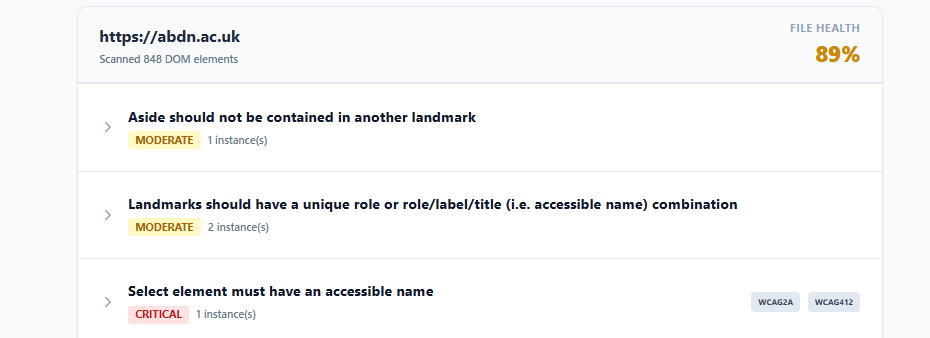

Automated tools hit a "60% ceiling." They generate generic reports that nobody
reads. They tell you what is broken, but not why it matters. Learn how pedagogical auditing
creates better experiences for everyone.
1. Introduction
Standard automated tools pass generic text like "Click Here" and fail to explain issues clearly.
This lack of context leaves development teams completely guessing how to
resolve
the underlying markup problems.
To a screen reader, this creates a maze of dead ends. A11yAudit was designed to close this gap
through
developer education rather than simple pass/fail scoring.
[ Structural Image ]
2. Architectural Methodology
Engineered as a high-performance Node.js web application.
Traditional architectures require spinning up heavy graphical instances that
drain
server processing power.
Using jsdom and a custom
DOM-traversal algorithm, it securely parses HTML buffers in-memory.
3. Results & Benchmarks
When benchmarked against Google Lighthouse, A11yAudit successfully flagged context-blind errors that
standard engines passed.
The testing environment used a tightly controlled suite of vulnerable
files.
It replaced generic checks with IDE-style extraction.

4. Conclusion & Impact
By shifting the focus from programmatic punishment to pedagogical feedback, A11yAudit lowers the
cognitive load of accessibility compliance.
Junior engineers no longer have to decipher highly academic W3C specifications
on
their own.
It provides a tool that teaches the why and how resulting in a more inclusive web.